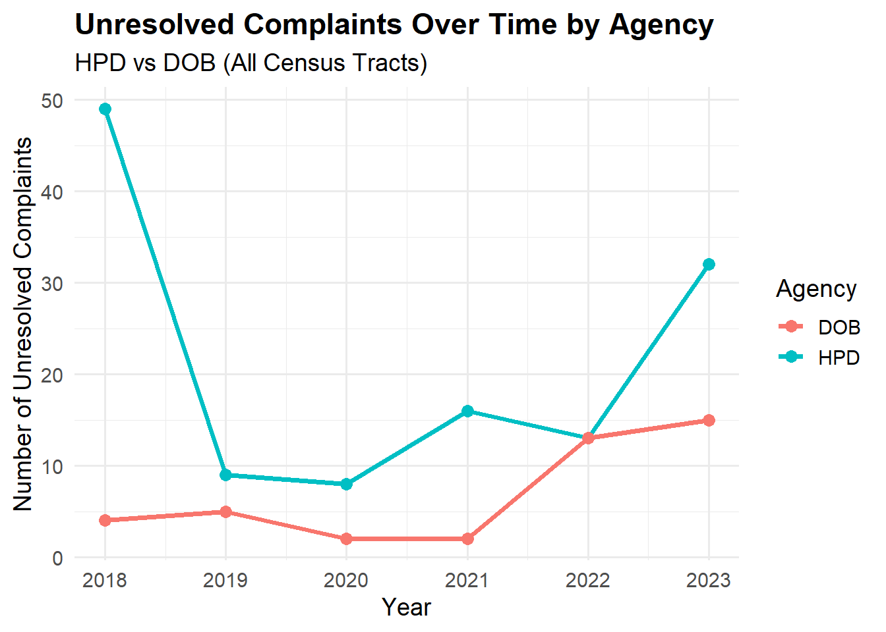
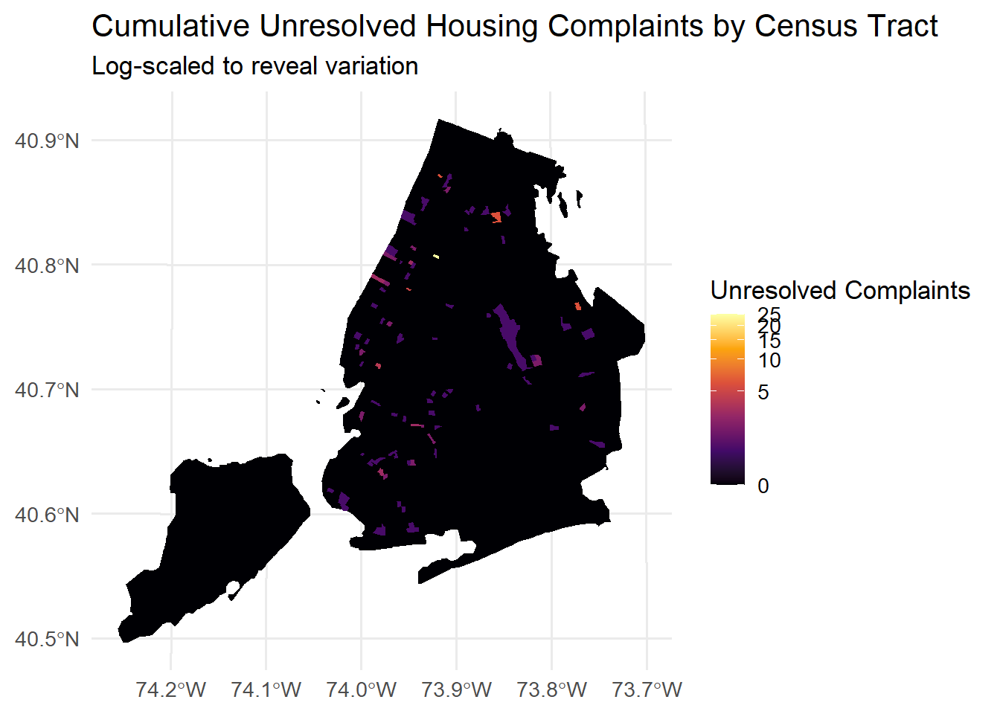
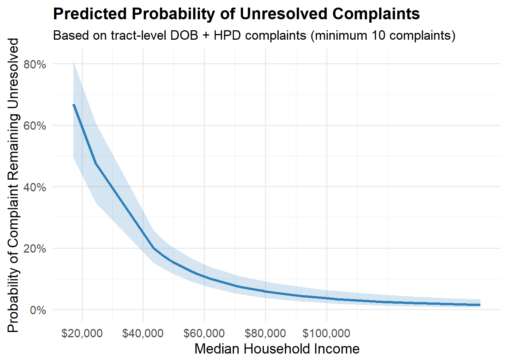

Housing conditions and housing-related complaints are a critical component of urban quality of life. In New York City, residents can file housing complaints through multiple channels, including the Department of Housing Preservation and Development (HPD), the Department of Buildings (DOB), and the NYC 311 service request system. These systems are designed to identify unsafe conditions, enforce housing codes, and ensure that violations are addressed in a timely manner.
A persistent concern in urban policy research is whether public services are delivered equitably across neighborhoods of different socioeconomic status. In the context of housing enforcement, this raises an important research question: do lower-income neighborhoods experience worse outcomes in complaint resolution, such as higher rates of unresolved complaints? If complaint resolution varies systematically by neighborhood income, this could indicate inequities in enforcement capacity, administrative burden, or service prioritization.
This project investigates whether lower-income Census tracts in New York City experience higher rates of unresolved housing-related complaints, using tract-level data from HPD, DOB, NYC 311, and the American Community Survey (ACS) for the year 2023. Rather than focusing on complaint volume alone, the analysis emphasizes resolution outcomes, distinguishing between resolved and unresolved cases. The primary outcome of interest is the unresolved complaint rate at the Census tract level.
To answer this question, the analysis integrates administrative complaint data with demographic and housing characteristics, performs spatial joins to assign complaints to Census tracts, and applies descriptive statistics, visualization, and logistic regression modeling. The report is structured as a reproducible research document, with all data acquisition, processing, and analysis steps fully documented in code.
Data Sources
This analysis relies on three primary data sources, all publicly available and widely used in urban research.
1 HPD Housing Violations
HPD violation data were obtained from NYC Open Data, specifically the HPD Violations dataset. These records document violations issued to residential buildings for conditions that may affect habitability, safety, or compliance with housing codes. Each record includes information on the violation status (open or closed).
2 DOB Complaints
DOB complaint data were also sourced from NYC Open Data. DOB complaints represent reports related to building safety, construction activity, and code enforcement. Each complaint includes a status field and, when available, a disposition date indicating closure.
4 American Community Survey (ACS)
Neighborhood socioeconomic characteristics were obtained from the American Community Survey (ACS) 5-year estimates for 2023, accessed via the tidycensus package.ACS data provide standardized, reliable demographic measures that allow comparison across Census tracts.
Data Cleaning and Processing
All datasets underwent systematic cleaning to ensure consistency, accuracy, and compatibility for merging.
Dates were parsed into standard formats using lubridate, and records were filtered to include only those occurring in 2023. Invalid or incomplete records—such as complaints without geographic identifiers—were removed where necessary.
HPD violation records were linked to Census tracts using MapPLUTO, a parcel-level dataset published by NYC Department of City Planning. BBL identifiers were used to assign each HPD violation to a Census tract via a spatial join.
DOB complaints were geocoded using the U.S. Census geocoder and spatially joined to Census tract boundaries. Complaints that could not be geocoded were excluded.
ACS data were cleaned and reduced to the variables needed for analysis, then merged with complaint data by Census tract and year.
Defining Unresolved Complaints
A key methodological decision in this analysis is how to define whether a complaint is unresolved.
For HPD violations, a violation was classified as unresolved if its status did not contain the word “CLOSE.” For DOB complaints, a complaint was classified as unresolved if its status did not contain “CLOSED.”
Binary indicators were created for each complaint. These indicators were then aggregated at the Census tract level to compute:
Total number of complaints
Total number of unresolved complaints
Unresolved complaint rate
By aggregating to the tract level, the analysis avoids over-weighting individual buildings or addresses with repeated complaints.
Show code
#4. Do lower-income neighborhoods experience higher rates of unresolved complaints?hpd_clean_q4 <- hpd_join |>select ( tract_geoid,year, violationstatus) |>ungroup()dob_clean_q4 <- dob_join |>select(tract_geoid, year, status, disposition_date) |>ungroup()# HPD: unresolved_hpd ----hpd_q4 <- hpd_clean_q4 %>%mutate(# clean status to avoid NA problems and case issuesviolationstatus_clean =str_to_upper(coalesce(violationstatus, "")),# unresolved = 1 if NOT any kind of CLOSEunresolved_hpd =if_else(str_detect(violationstatus_clean, "CLOSE"),0L, 1L ) )# DOB: unresolved_dob dob_q4 <- dob_clean_q4 %>%mutate(status_clean =str_to_upper(coalesce(status, "")),# unresolved = 1 if status does NOT contain "CLOSED"unresolved_dob =if_else(str_detect(status_clean, "CLOSED"),0L, 1L ) )
Exploratory Analysis
To examine how unresolved housing complaints vary by neighborhood income, complaint data from HPD and DOB were first aggregated to the census tract–year level, calculating both total complaints and the number remaining unresolved. These tract-level complaint summaries were then merged with American Community Survey (ACS) data using census tract GEOIDs and year, allowing each tract to be associated with its median household income and housing characteristics. Missing complaint counts were treated as zero to ensure consistent coverage across tracts. After combining HPD and DOB complaints into total and unresolved counts, census tracts were grouped into income quintiles based on median household income, from lowest to highest. Aggregating complaints within these quintiles enabled comparison of unresolved complaint rates across income levels, providing a standardized way to assess how resolution outcomes differ by neighborhood socioeconomic status.
Show code
## HPD: count total + unresolved per tract/year hpd_by_tract <- hpd_q4 %>%group_by(tract_geoid, year) %>%summarise(hpd_n =n(), # total HPD violationshpd_unres =sum(unresolved_hpd, na.rm =TRUE), # unresolved HPDhpd_unres_rate = hpd_unres / hpd_n, # unresolved rate.groups ="drop" )## DOB: count total + unresolved per tract/year dob_by_tract <- dob_q4 %>%group_by(tract_geoid, year) %>%summarise(dob_n =n(), # total DOB complaintsdob_unres =sum(unresolved_dob, na.rm =TRUE), # unresolved DOBdob_unres_rate = dob_unres / dob_n, # unresolved rate.groups ="drop" )complaints_q4 <- acs_clean %>%left_join(hpd_by_tract, by =c("tract_geoid", "year")) %>%left_join(dob_by_tract, by =c("tract_geoid", "year")) %>%mutate(# treat missing counts as 0 (tracts with no HPD/DOB complaints)hpd_n =coalesce(hpd_n, 0L),hpd_unres =coalesce(hpd_unres, 0L),dob_n =coalesce(dob_n, 0L),dob_unres =coalesce(dob_unres, 0L),# combined totalstotal_n = hpd_n + dob_n,total_unres = hpd_unres + dob_unres,total_unres_rate =if_else( total_n >0, total_unres / total_n,0 ) ) unresolved_by_quintile <- complaints_q4 %>%# make income quintiles (drop NAs so ntile() doesn't complain)filter(!is.na(median_income)) %>%mutate(income_quintile =ntile(as.numeric(median_income), 5) ) %>%group_by(income_quintile) %>%summarise(n_complaints =sum(total_n, na.rm =TRUE), n_unresolved =sum(total_unres, na.rm =TRUE), unresolved_rate = n_unresolved / n_complaints,.groups ="drop" )
The following bar chart summarizes the unresolved complaint rate across five income quintiles, where Quintile 1 represents the lowest-income tracts and Quintile 5 represents the highest-income tracts.
This chart shows a clear relationship between neighborhood income levels and the likelihood that housing-related complaints remain unresolved. Census tracts in the lowest income quintile (Quintile 1) experience the highest unresolved complaint rate, at approximately 2.3%, which is notably higher than all middle-income groups.
As income increases from Quintile 1 to Quintile 4, the unresolved complaint rate steadily declines, reaching its lowest point in Quintile 4 (around 0.7%). This pattern suggests that middle-to-upper income neighborhoods tend to see more effective resolution of complaints, potentially reflecting differences in housing quality, access to resources, or responsiveness from enforcement agencies.
Interestingly, the highest income quintile (Quintile 5) shows a moderate increase in unresolved complaints (about 1.7%), breaking the otherwise downward trend. This may reflect factors such as more complex housing structures, different reporting behaviors, or variations in complaint types rather than enforcement neglect.
Overall, the figure provides evidence that lower-income neighborhoods face a disproportionate burden of unresolved housing complaints, supporting the hypothesis that income inequality is associated with disparities in complaint resolution outcomes.
Show code
yearly_unresolved <- complaints_q4 %>%group_by(year) %>%summarise(HPD_unresolved =sum(hpd_unres, na.rm =TRUE),DOB_unresolved =sum(dob_unres, na.rm =TRUE),.groups ="drop" ) yearly_unresolved_long <- yearly_unresolved %>%pivot_longer(cols =c(HPD_unresolved, DOB_unresolved),names_to ="agency",values_to ="unresolved_count" ) %>%mutate(agency =recode( agency,"HPD_unresolved"="HPD","DOB_unresolved"="DOB" ) )ggplot(yearly_unresolved_long,aes(x = year, y = unresolved_count, color = agency)) +geom_line(linewidth =1.3) +geom_point(size =3) +scale_y_continuous(labels = comma) +scale_x_continuous(breaks =unique(yearly_unresolved_long$year)) +labs(title ="Unresolved Complaints Over Time by Agency",subtitle ="HPD vs DOB (All Census Tracts)",x ="Year",y ="Number of Unresolved Complaints",color ="Agency" ) +theme_minimal(base_size =14) +theme(plot.title =element_text(face ="bold"),legend.position ="right" )

This figure compares the number of unresolved housing-related complaints handled by HPD and DOB across all census tracts from 2018 to 2023. Overall, HPD consistently reports a higher number of unresolved complaints than DOB, particularly in earlier years, indicating a larger or more persistent backlog within HPD cases.
In 2018, HPD shows a notably high spike in unresolved complaints, followed by a sharp decline in 2019 and 2020, which may reflect changes in enforcement activity, reporting practices, or administrative capacity. From 2021 onward, unresolved HPD complaints begin to rise again, peaking in 2023, suggesting renewed pressures or growing caseloads in recent years.
DOB unresolved complaints remain comparatively lower throughout the period but show a clear upward trend after 2020, with a pronounced increase between 2021 and 2022. This suggests that while DOB handles fewer unresolved complaints overall, resolution delays have become more common in recent years
Unresolved Housing Complaints by Borough
To better understand how unresolved housing complaints are distributed across New York City, this analysis aggregates unresolved complaints from both the Department of Housing Preservation and Development (HPD) and the Department of Buildings (DOB) at the borough level. By examining cumulative unresolved complaints between 2018 and 2023, this visualization highlights geographic disparities in enforcement outcomes and provides context for how complaint resolution varies across different parts of the city.
This chart shows the total number of unresolved housing complaints aggregated across all census tracts from 2018 to 2023, combining both HPD and DOB complaints. The Bronx has the highest number of unresolved complaints over this period, followed closely by Manhattan. Brooklyn also exhibits a substantial number of unresolved cases, while Queens shows notably lower totals. Staten Island has the fewest unresolved complaints, reflecting both its smaller population and lower overall complaint volume.
These differences likely reflect a combination of factors, including housing density, age of the housing stock, enforcement complexity, and agency workload. Boroughs with denser and older housing—such as the Bronx and Manhattan—may face more persistent structural issues and enforcement challenges, contributing to higher levels of unresolved complaints. Overall, this visualization highlights clear spatial disparities in complaint resolution across New York City, suggesting that unresolved housing issues are not evenly distributed across boroughs.
Show code
ggplot(map_data) +geom_sf(aes(fill = total_unres_all), color =NA) +scale_fill_viridis_c(option ="inferno",trans ="log1p", na.value ="grey90",labels = comma ) +labs(title ="Cumulative Unresolved Housing Complaints by Census Tract",subtitle ="Log-scaled to reveal variation",fill ="Unresolved Complaints" ) +theme_minimal(base_size =13)

Logistic Model
To further examine whether income is associated with complaint resolution outcomes, I estimate a logistic regression model at the census tract level. The model evaluates how median household income relates to the probability that a housing complaint remains unresolved, while accounting for differences in complaint volume across tracts. Logistic regression is appropriate for this analysis because the outcome of interest is binary in nature whether complaints are resolved or unresolved—and it allows the results to be interpreted in terms of probabilities rather than raw counts. This approach provides a more rigorous test of the relationship between neighborhood income and unresolved housing complaints beyond descriptive comparisons alone.
Show code
#Logistic Modelcomplaints_q4_logit <- complaints_q4 %>%filter(total_n >=10) %>%mutate(total_resolved = total_n - total_unres )logit_model_unres <-glm(cbind(total_unres, total_resolved) ~log(median_income),family = binomial,data = complaints_q4_logit)# Generate predicted probabilities across income rangepred_unres <-ggpredict( logit_model_unres,terms ="median_income [all]")# Convert x-axis back to numeric pred_unres$median_income <-as.numeric(pred_unres$x)ggplot(pred_unres, aes(x = median_income, y = predicted)) +geom_line(color ="#2C7FB8", size =1.2) +geom_ribbon(aes(ymin = conf.low, ymax = conf.high),fill ="#2C7FB8",alpha =0.2 ) +scale_x_continuous(labels =dollar_format(accuracy =1),breaks =seq(20000, 100000, by =20000) ) +scale_y_continuous(labels =percent_format(accuracy =1),limits =c(0, NA) ) +labs(title ="Predicted Probability of Unresolved Complaints",subtitle ="Based on tract-level DOB + HPD complaints (minimum 10 complaints)",x ="Median Household Income",y ="Probability of Complaint Remaining Unresolved" ) +theme_minimal(base_size =14) +theme(plot.title =element_text(face ="bold", size =16),plot.subtitle =element_text(size =13) )

This figure shows the predicted probability that a housing complaint remains unresolved as a function of median household income, based on a logistic regression model using tract-level DOB and HPD complaints (restricted to tracts with at least 10 complaints). The results indicate a strong negative relationship between income and unresolved complaints.
In lower-income neighborhoods (around $20,000–$40,000 in median household income), the probability that a complaint remains unresolved is substantially higher—exceeding 40–60% in the lowest-income range. As income increases, the probability of unresolved complaints declines sharply, with the steepest drop occurring between approximately $30,000 and $60,000. Beyond this range, the curve flattens, and higher-income neighborhoods exhibit consistently low probabilities of unresolved complaints, generally below 10%.
The shaded confidence band shows greater uncertainty at lower income levels, likely reflecting fewer observations or more variability in complaint outcomes among low-income tracts. Nonetheless, the overall pattern is robust: higher neighborhood income is associated with a significantly lower likelihood that housing complaints remain unresolved. This finding supports the conclusion that lower-income neighborhoods face disproportionately higher risks of unresolved housing issues, even after aggregating complaints across agencies and accounting for minimum complaint volume.
Overall Synthesis: Linking Results to the Main Research Question
Main Question: To what extent do neighborhood income levels influence the spatial distribution, types, and resolution outcomes of housing complaints in New York City?
This analysis demonstrates that neighborhood income levels play a substantial and interconnected role in shaping housing complaint patterns across New York City. Income influences not only where complaints are concentrated, but also the types of housing issues residents face and the likelihood that those complaints are ultimately resolved.
• Spatially, lower-income neighborhoods consistently experience higher concentrations of unresolved housing complaints, particularly when complaints are aggregated at the census tract level. This clustering suggests persistent structural housing challenges rather than isolated incidents. • By complaint type, lower-income areas show disproportionately higher unresolved complaints from both the Department of Buildings (DOB) and the Department of Housing Preservation and Development (HPD), often involving serious quality-of-life and safety concerns. • In terms of resolution outcomes, higher neighborhood income is strongly associated with a lower probability that complaints remain unresolved. Logistic regression results indicate that as median household income increases, the likelihood of unresolved complaints declines sharply, especially at the lower end of the income distribution. • Over time, these disparities persist across multiple years, indicating that unresolved housing issues in lower-income neighborhoods are not temporary but instead accumulate and compound rather than self-correct.
Final Conclusion
Overall, neighborhood income does not merely correlate with housing complaints it shapes the entire complaint lifecycle, from where complaints occur, to what types of problems are reported, and ultimately whether residents see their housing issues resolved. The findings provide clear evidence that housing complaint resolution in New York City is not income-neutral, but instead reflects systemic inequalities tied to neighborhood socioeconomic conditions. Lower-income communities face both a higher burden of unresolved complaints and a lower likelihood of timely resolution, reinforcing existing patterns of housing inequality across the city.
Limitations
Several limitations should be acknowledged. First, unresolved status is inferred from administrative complaint records and may not fully capture informal resolutions or delayed follow-ups that occur outside official systems. Second, the analysis aggregates data at the census tract level, which may mask within-tract variation and individual building-level dynamics. Third, while income is a strong explanatory factor, other unobserved variables such as landlord behavior, housing age, enforcement capacity, or tenant advocacy may also influence complaint outcomes and are not fully captured in this study.
Directions for Future Research
Future work could build on this analysis by incorporating building-level characteristics (such as age, ownership type, or rent regulation status) to better understand mechanisms driving unresolved complaints. Longitudinal modeling could also assess how resolution outcomes evolve following policy changes or enforcement initiatives. Additionally, integrating qualitative data such as tenant interviews or case studies would provide valuable context for understanding how residents experience and navigate the complaint process. Expanding the analysis to include resolution timelines, rather than binary outcomes, would further clarify how income shapes not just whether complaints are resolved, but how quickly residents receive relief.
Source Code
---title: "BREAKING: Inside NYC Housing"author: "Maria Cristina Moreno"format: html---# IntroductionHousing conditions and housing-related complaints are a critical component of urban quality of life. In New York City, residents can file housing complaints through multiple channels, including the Department of Housing Preservation and Development (HPD), the Department of Buildings (DOB), and the NYC 311 service request system. These systems are designed to identify unsafe conditions, enforce housing codes, and ensure that violations are addressed in a timely manner.A persistent concern in urban policy research is whether public services are delivered equitably across neighborhoods of different socioeconomic status. In the context of housing enforcement, this raises an important research question: **do lower-income neighborhoods experience worse outcomes in complaint resolution, such as higher rates of unresolved complaints?** If complaint resolution varies systematically by neighborhood income, this could indicate inequities in enforcement capacity, administrative burden, or service prioritization.This project investigates whether lower-income Census tracts in New York City experience higher rates of unresolved housing-related complaints, using tract-level data from HPD, DOB, NYC 311, and the American Community Survey (ACS) for the year 2023. Rather than focusing on complaint volume alone, the analysis emphasizes resolution outcomes, distinguishing between resolved and unresolved cases. The primary outcome of interest is the unresolved complaint rate at the Census tract level.To answer this question, the analysis integrates administrative complaint data with demographic and housing characteristics, performs spatial joins to assign complaints to Census tracts, and applies descriptive statistics, visualization, and logistic regression modeling. The report is structured as a reproducible research document, with all data acquisition, processing, and analysis steps fully documented in code.# Data SourcesThis analysis relies on three primary data sources, all publicly available and widely used in urban research.**1 HPD Housing Violations**HPD violation data were obtained from NYC Open Data, specifically the HPD Violations dataset. These records document violations issued to residential buildings for conditions that may affect habitability, safety, or compliance with housing codes. Each record includes information on the violation status (open or closed).**2 DOB Complaints**DOB complaint data were also sourced from NYC Open Data. DOB complaints represent reports related to building safety, construction activity, and code enforcement. Each complaint includes a status field and, when available, a disposition date indicating closure.**4 American Community Survey (ACS)**Neighborhood socioeconomic characteristics were obtained from the American Community Survey (ACS) 5-year estimates for 2023, accessed via the tidycensus package.ACS data provide standardized, reliable demographic measures that allow comparison across Census tracts.## Data Cleaning and ProcessingAll datasets underwent systematic cleaning to ensure consistency, accuracy, and compatibility for merging.Dates were parsed into standard formats using lubridate, and records were filtered to include only those occurring in 2023. Invalid or incomplete records—such as complaints without geographic identifiers—were removed where necessary.HPD violation records were linked to Census tracts using MapPLUTO, a parcel-level dataset published by NYC Department of City Planning. BBL identifiers were used to assign each HPD violation to a Census tract via a spatial join.DOB complaints were geocoded using the U.S. Census geocoder and spatially joined to Census tract boundaries. Complaints that could not be geocoded were excluded.ACS data were cleaned and reduced to the variables needed for analysis, then merged with complaint data by Census tract and year.```{r}#| echo: false#| message: false#| warning: false#| results: hidelibrary(devtools) library(RSocrata)library(janitor)library(lubridate)library(dplyr)library(tidycensus)library(tidyverse)library(tigris)library(sf)library(tidygeocoder)library(scales)library(purrr)library(ggeffects)# --- Tokens / Keys ---app_token <-"ExUt22WiPiJvXNo3ZwPuIUDuC"census_api_key("5cd8f72bd473b6e815af190efa42dfdcd3804b99", install =FALSE)# --- HPD Violations (2018-2023) ---url_hpd <-"https://data.cityofnewyork.us/resource/wvxf-dwi5.csv?$limit=100000"hpd_raw <-read.socrata(url_hpd, app_token = app_token) %>%clean_names()# --- 311 Complaints (2018-2023) ---url_311 <-paste0("https://data.cityofnewyork.us/resource/erm2-nwe9.json?","$select=unique_key,created_date,complaint_type,descriptor,incident_address,incident_zip,borough,latitude,longitude","&$where=created_date >= '2018-01-01T00:00:00' AND created_date < '2024-01-01T00:00:00'","&$limit=50000")nyc311_raw <-read.socrata(url_311, app_token = app_token) %>%clean_names()# --- DOB Complaints (2018-2023) ---url_dob <-"https://data.cityofnewyork.us/resource/vztk-gaf7.csv?$limit=50000"dob_raw <-read.socrata(url_dob, app_token = app_token) %>%clean_names()# --- ACS Data (2018-2023) ---vars <-c(income ="B19013_001E",rent_burden ="B25070_001E",housing_units ="B25002_001E")nyc_counties <-c("New York","Kings","Queens","Bronx","Richmond")years <-2018:2023acs_list <-lapply(years, function(y) {get_acs(geography ="tract",variables = vars,year = y,survey ="acs5",state ="NY",county = nyc_counties,output ="wide" ) %>%mutate(year = y)})acs_nyc_tracts <-bind_rows(acs_list)# ====================================================================================================================================# Step 2: Cleaning the Data:# ====================================================================================================================================# --- HPD Cleaning ---hpd_clean <- hpd_raw %>%mutate(novissueddate =ymd(novissueddate),inspectiondate =ymd(inspectiondate),approveddate =ymd(approveddate),originalcertifybydate =ymd(originalcertifybydate),originalcorrectbydate =ymd(originalcorrectbydate),newcertifybydate =ymd(newcertifybydate),newcorrectbydate =ymd(newcorrectbydate),certifieddate =ymd(certifieddate),currentstatusdate =ymd(currentstatusdate),date = novissueddate,year =year(date),month =month(date),dow =wday(date, label =TRUE),boroid =suppressWarnings(as.integer(boroid)),block =suppressWarnings(as.integer(block)),lot =suppressWarnings(as.integer(lot)),bbl =if_else(!is.na(boroid) &!is.na(block) &!is.na(lot),sprintf("%01d%05d%04d", boroid, block, lot), NA_character_) ) %>%filter(between(date, as.Date("2018-01-01"), as.Date("2023-12-31")), class %in%c("A","B","C"),!is.na(bbl), !is.na(boro))# --- 311 Cleaning ---nyc311_clean <- nyc311_raw %>%mutate(created_date =ymd_hms(created_date),date =as_date(created_date),year =year(created_date),month =month(created_date),dow =wday(created_date, label =TRUE) ) %>%filter(between(date, as.Date("2018-01-01"), as.Date("2023-12-31")),!is.na(latitude), !is.na(longitude))# --- DOB Cleaning ---dob_clean <- dob_raw %>%mutate(date_entered =mdy(date_entered),inspection_date =mdy(inspection_date),disposition_date =mdy(disposition_date),dobrundate =mdy(dobrundate),date = date_entered,year =year(date_entered),month =month(date_entered),dow =wday(date_entered, label =TRUE),full_address =paste0(house_number, " ", house_street, ", NY ", zip_code) ) %>%filter(between(date, as.Date("2018-01-01"), as.Date("2023-12-31")))# --- ACS Cleaning ---acs_clean <- acs_nyc_tracts %>%mutate(tract_geoid = GEOID,median_income = income,rent_burden = rent_burden,housing_units = housing_units ) %>% dplyr::select(tract_geoid, median_income, rent_burden, housing_units, year)# ===================================================================================================================================# Step 3: Spatial Join for Datasets# ===================================================================================================================================# 311 Complaints:# Load tract polygons for NYC countiesnyc_counties <-c("New York","Kings","Queens","Bronx","Richmond") tracts_sf <-tracts(state ="NY", county = nyc_counties, cb =TRUE) %>%st_transform(2263) # NY State Plane CRS# Convert 311 complaints to sfnyc311_sf <- nyc311_clean %>%st_as_sf(coords =c("longitude","latitude"), crs =4326, remove =FALSE) %>%st_transform(2263)# Spatial join: assign tract GEOID to each complaintnyc311_join <-st_join(nyc311_sf, tracts_sf["GEOID"], left =TRUE) %>%st_drop_geometry() %>%rename(tract_geoid = GEOID)# ==================================================================================================================================# Load MapPluto in R# ==================================================================================================================================pluto_path <-"C:/Users/crist/Downloads/nyc_mappluto_25v3_fgdb/MapPLUTO25v3.gdb"# Read the correct MapPLUTO layerpluto <-st_read(dsn = pluto_path, layer ="MapPLUTO_25v3_clipped") %>%st_transform(2263) # NY State Plane CRS# Load tract polygons for NYCnyc_counties <-c("New York","Kings","Queens","Bronx","Richmond")tracts_sf <-tracts(state ="NY", county = nyc_counties, year =2023, cb =TRUE) %>%st_transform(2263)# Spatial join: assign tract GEOID to each PLUTO lotpluto_with_tract <-st_join(pluto, tracts_sf["GEOID"], left =TRUE)# Create lookup table: BBL ??? tract GEOIDpluto_lookup <- pluto_with_tract %>%st_drop_geometry() %>% dplyr::select(BBL, GEOID) %>% dplyr::rename(tract_geoid = GEOID)#Join HPD and DOB complaints by BBL (Borough - Block - Lot)# Make both BBL fields characterpluto_lookup <- pluto_lookup %>%mutate(BBL =as.character(BBL))hpd_clean <- hpd_clean %>%mutate(bbl =as.character(bbl))# Join HPD complaints to tract GEOIDs (many-to-many is fine here)hpd_join <- hpd_clean %>%inner_join(pluto_lookup, by =c("bbl"="BBL"))# Aggregate: complaints per tract per yearhpd_counts <- hpd_join %>%group_by(tract_geoid, year) %>%summarise(hpd_complaints =n(), .groups ="drop")#DOB complaints:census_api_key(Sys.getenv("CENSUS_API_KEY"))library(readr)dir.create("data/cache", recursive =TRUE, showWarnings =FALSE)cache_file <-"data/cache/dob_geocoded_2018_2023.csv"geocode_chunk_safe <-function(df, tries =3, pause_sec =2) {for (k inseq_len(tries)) { out <-try(geocode( df,address = full_address,method ="census",lat = latitude,long = longitude ),silent =TRUE )if (!inherits(out, "try-error")) return(out)Sys.sleep(pause_sec * k) } df %>%mutate(latitude =NA_real_, longitude =NA_real_)}geocode_in_chunks_safe <-function(df, chunk_size =8000) { split_df <-split(df, ceiling(seq_len(nrow(df)) / chunk_size))map_dfr(split_df, ~{Sys.sleep(1) geocode_chunk_safe(.x, tries =3, pause_sec =3) })}if (file.exists(cache_file)) { dob_geo <-read_csv(cache_file, show_col_types =FALSE)} else { dob_geo <-geocode_in_chunks_safe(dob_clean, chunk_size =8000)write_csv(dob_geo, cache_file)}# Drop failed geocodesdob_geo_clean <- dob_geo %>%filter(!is.na(latitude), !is.na(longitude))# Convert to sf and join to tractsdob_sf <- dob_geo_clean %>%st_as_sf(coords =c("longitude","latitude"), crs =4326, remove =FALSE) %>%st_transform(2263)dob_join <-st_join(dob_sf, tracts_sf["GEOID"], left =TRUE) %>%st_drop_geometry() %>%rename(tract_geoid = GEOID)# Aggregate by tract/yeardob_counts <- dob_join %>%group_by(tract_geoid, year) %>%summarise(dob_complaints =n(), .groups ="drop")```## Defining Unresolved ComplaintsA key methodological decision in this analysis is how to define whether a complaint is unresolved.For **HPD violations**, a violation was classified as unresolved if its status did not contain the word “CLOSE.”For **DOB complaints**, a complaint was classified as unresolved if its status did not contain “CLOSED.”Binary indicators were created for each complaint. These indicators were then aggregated at the Census tract level to compute:- Total number of complaints- Total number of unresolved complaints- Unresolved complaint rateBy aggregating to the tract level, the analysis avoids over-weighting individual buildings or addresses with repeated complaints.```{r}#| label: unresolved-flags#| echo: true#| message: false#| warning: false#| code-fold: true#| code-summary: "Show code"#4. Do lower-income neighborhoods experience higher rates of unresolved complaints?hpd_clean_q4 <- hpd_join |>select ( tract_geoid,year, violationstatus) |>ungroup()dob_clean_q4 <- dob_join |>select(tract_geoid, year, status, disposition_date) |>ungroup()# HPD: unresolved_hpd ----hpd_q4 <- hpd_clean_q4 %>%mutate(# clean status to avoid NA problems and case issuesviolationstatus_clean =str_to_upper(coalesce(violationstatus, "")),# unresolved = 1 if NOT any kind of CLOSEunresolved_hpd =if_else(str_detect(violationstatus_clean, "CLOSE"),0L, 1L ) )# DOB: unresolved_dob dob_q4 <- dob_clean_q4 %>%mutate(status_clean =str_to_upper(coalesce(status, "")),# unresolved = 1 if status does NOT contain "CLOSED"unresolved_dob =if_else(str_detect(status_clean, "CLOSED"),0L, 1L ) )```# Exploratory AnalysisTo examine how unresolved housing complaints vary by neighborhood income, complaint data from HPD and DOB were first aggregated to the census tract–year level, calculating both total complaints and the number remaining unresolved. These tract-level complaint summaries were then merged with American Community Survey (ACS) data using census tract GEOIDs and year, allowing each tract to be associated with its median household income and housing characteristics. Missing complaint counts were treated as zero to ensure consistent coverage across tracts. After combining HPD and DOB complaints into total and unresolved counts, census tracts were grouped into income quintiles based on median household income, from lowest to highest. Aggregating complaints within these quintiles enabled comparison of unresolved complaint rates across income levels, providing a standardized way to assess how resolution outcomes differ by neighborhood socioeconomic status.```{r}#| label: aggregate-merge-acs #| message: false#| warning: false#| code-fold: true#| code-summary: "Show code"## HPD: count total + unresolved per tract/year hpd_by_tract <- hpd_q4 %>%group_by(tract_geoid, year) %>%summarise(hpd_n =n(), # total HPD violationshpd_unres =sum(unresolved_hpd, na.rm =TRUE), # unresolved HPDhpd_unres_rate = hpd_unres / hpd_n, # unresolved rate.groups ="drop" )## DOB: count total + unresolved per tract/year dob_by_tract <- dob_q4 %>%group_by(tract_geoid, year) %>%summarise(dob_n =n(), # total DOB complaintsdob_unres =sum(unresolved_dob, na.rm =TRUE), # unresolved DOBdob_unres_rate = dob_unres / dob_n, # unresolved rate.groups ="drop" )complaints_q4 <- acs_clean %>%left_join(hpd_by_tract, by =c("tract_geoid", "year")) %>%left_join(dob_by_tract, by =c("tract_geoid", "year")) %>%mutate(# treat missing counts as 0 (tracts with no HPD/DOB complaints)hpd_n =coalesce(hpd_n, 0L),hpd_unres =coalesce(hpd_unres, 0L),dob_n =coalesce(dob_n, 0L),dob_unres =coalesce(dob_unres, 0L),# combined totalstotal_n = hpd_n + dob_n,total_unres = hpd_unres + dob_unres,total_unres_rate =if_else( total_n >0, total_unres / total_n,0 ) ) unresolved_by_quintile <- complaints_q4 %>%# make income quintiles (drop NAs so ntile() doesn't complain)filter(!is.na(median_income)) %>%mutate(income_quintile =ntile(as.numeric(median_income), 5) ) %>%group_by(income_quintile) %>%summarise(n_complaints =sum(total_n, na.rm =TRUE), n_unresolved =sum(total_unres, na.rm =TRUE), unresolved_rate = n_unresolved / n_complaints,.groups ="drop" )```The following bar chart summarizes the unresolved complaint rate across five income quintiles, where Quintile 1 represents the lowest-income tracts and Quintile 5 represents the highest-income tracts.```{r}#| label: unresolved-complaint-rate-by-income-quintile#| echo: true#| message: false#| warning: false#| code-fold: true#| code-summary: "Show code"#Visualizationlibrary(scales)ggplot(unresolved_by_quintile, aes(x =factor(income_quintile),y = unresolved_rate)) +geom_col(fill ="steelblue", alpha =0.7) +geom_text(aes(label =percent(unresolved_rate, accuracy =0.1)),vjust =-0.5 ) +scale_y_continuous(labels =percent_format()) +labs(title ="Unresolved Complaint Rate by Income Quintile",x ="Income Quintile (1 = Lowest Income, 5 = Highest Income)",y ="Unresolved Complaint Rate" ) +theme_minimal(base_size =13)```**Interpretation:**This chart shows a clear relationship between neighborhood income levels and the likelihood that housing-related complaints remain unresolved. Census tracts in the **lowest income quintile (Quintile 1)** experience the **highest unresolved complaint rate**, at approximately **2.3%**, which is notably higher than all middle-income groups.As income increases from Quintile 1 to Quintile 4, the unresolved complaint rate steadily declines, reaching its lowest point in Quintile 4 (around 0.7%). This pattern suggests that middle-to-upper income neighborhoods tend to see more effective resolution of complaints, potentially reflecting differences in housing quality, access to resources, or responsiveness from enforcement agencies.Interestingly, the highest income quintile (Quintile 5) shows a moderate increase in unresolved complaints (about 1.7%), breaking the otherwise downward trend. This may reflect factors such as more complex housing structures, different reporting behaviors, or variations in complaint types rather than enforcement neglect.Overall, the figure provides **evidence that lower-income neighborhoods face a disproportionate burden of unresolved housing complaints**, supporting the hypothesis that income inequality is associated with disparities in complaint resolution outcomes.```{r}#| label: unresolved-complaints-over-time-by-agency#| echo: true#| message: false#| warning: false#| code-fold: true#| code-summary: "Show code" yearly_unresolved <- complaints_q4 %>%group_by(year) %>%summarise(HPD_unresolved =sum(hpd_unres, na.rm =TRUE),DOB_unresolved =sum(dob_unres, na.rm =TRUE),.groups ="drop" ) yearly_unresolved_long <- yearly_unresolved %>%pivot_longer(cols =c(HPD_unresolved, DOB_unresolved),names_to ="agency",values_to ="unresolved_count" ) %>%mutate(agency =recode( agency,"HPD_unresolved"="HPD","DOB_unresolved"="DOB" ) )ggplot(yearly_unresolved_long,aes(x = year, y = unresolved_count, color = agency)) +geom_line(linewidth =1.3) +geom_point(size =3) +scale_y_continuous(labels = comma) +scale_x_continuous(breaks =unique(yearly_unresolved_long$year)) +labs(title ="Unresolved Complaints Over Time by Agency",subtitle ="HPD vs DOB (All Census Tracts)",x ="Year",y ="Number of Unresolved Complaints",color ="Agency" ) +theme_minimal(base_size =14) +theme(plot.title =element_text(face ="bold"),legend.position ="right" )```This figure compares the number of unresolved housing-related complaints handled by HPD and DOB across all census tracts from 2018 to 2023. Overall, **HPD consistently reports a higher number of unresolved complaints than DOB**, particularly in earlier years, indicating a larger or more persistent backlog within HPD cases.In 2018, HPD shows a notably high spike in unresolved complaints, followed by a sharp decline in 2019 and 2020, which may reflect changes in enforcement activity, reporting practices, or administrative capacity. From 2021 onward, unresolved HPD complaints begin to rise again, peaking in 2023, suggesting renewed pressures or growing caseloads in recent years.DOB unresolved complaints remain comparatively lower throughout the period but show a **clear upward trend after 2020**, with a pronounced increase between 2021 and 2022. This suggests that while DOB handles fewer unresolved complaints overall, resolution delays have become more common in recent years### Unresolved Housing Complaints by BoroughTo better understand how unresolved housing complaints are distributed across New York City, this analysis aggregates unresolved complaints from both the Department of Housing Preservation and Development (HPD) and the Department of Buildings (DOB) at the borough level. By examining cumulative unresolved complaints between 2018 and 2023, this visualization highlights geographic disparities in enforcement outcomes and provides context for how complaint resolution varies across different parts of the city.```{r}#| label: unresolved-housing-complaints-by-borough#| echo: true#| message: false#| warning: false#| code-fold: true#| code-summary: "Show code"unres_map <- complaints_q4 %>%group_by(tract_geoid) %>%summarise(total_unres_all =sum(total_unres, na.rm =TRUE),.groups ="drop" ) map_data <- tracts_sf %>%right_join( unres_map,by =c("GEOID"="tract_geoid") )map_data <- map_data %>%mutate(borough =case_when( COUNTYFP =="005"~"Bronx", COUNTYFP =="047"~"Brooklyn", COUNTYFP =="061"~"Manhattan", COUNTYFP =="081"~"Queens", COUNTYFP =="085"~"Staten Island",TRUE~NA_character_ ) )boro_unres <- map_data %>%st_drop_geometry() %>%filter(!is.na(borough)) %>%group_by(borough) %>%summarise(total_unresolved =sum(total_unres_all, na.rm =TRUE),.groups ="drop" ) %>%arrange(desc(total_unresolved))ggplot(boro_unres, aes(x =reorder(borough, total_unresolved),y = total_unresolved)) +geom_col(fill ="steelblue", alpha =0.8) +coord_flip() +scale_y_continuous(labels = comma) +labs(title ="Unresolved Complaints by Borough (2018–2023)",subtitle ="HPD + DOB complaints aggregated across all census tracts",x ="Borough",y ="Total Unresolved Complaints" ) +theme_minimal(base_size =14)```This chart shows the total number of unresolved housing complaints aggregated across all census tracts from 2018 to 2023, combining both HPD and DOB complaints. The Bronx has the highest number of unresolved complaints over this period, followed closely by Manhattan. Brooklyn also exhibits a substantial number of unresolved cases, while Queens shows notably lower totals. Staten Island has the fewest unresolved complaints, reflecting both its smaller population and lower overall complaint volume.These differences likely reflect a combination of factors, including housing density, age of the housing stock, enforcement complexity, and agency workload. Boroughs with denser and older housing—such as the Bronx and Manhattan—may face more persistent structural issues and enforcement challenges, contributing to higher levels of unresolved complaints. Overall, this visualization highlights clear spatial disparities in complaint resolution across New York City, suggesting that unresolved housing issues are not evenly distributed across boroughs.```{r}#| label: cumulative-unresolved-housing-complaints-by-census-tract#| echo: true#| message: false#| warning: false#| code-fold: true#| code-summary: "Show code"ggplot(map_data) +geom_sf(aes(fill = total_unres_all), color =NA) +scale_fill_viridis_c(option ="inferno",trans ="log1p", na.value ="grey90",labels = comma ) +labs(title ="Cumulative Unresolved Housing Complaints by Census Tract",subtitle ="Log-scaled to reveal variation",fill ="Unresolved Complaints" ) +theme_minimal(base_size =13)```### Logistic ModelTo further examine whether income is associated with complaint resolution outcomes, I estimate a logistic regression model at the census tract level. The model evaluates how median household income relates to the probability that a housing complaint remains unresolved, while accounting for differences in complaint volume across tracts. Logistic regression is appropriate for this analysis because the outcome of interest is binary in nature whether complaints are resolved or unresolved—and it allows the results to be interpreted in terms of probabilities rather than raw counts. This approach provides a more rigorous test of the relationship between neighborhood income and unresolved housing complaints beyond descriptive comparisons alone.```{r}#| label: logistic-model#| echo: true#| message: false#| warning: false#| code-fold: true#| code-summary: "Show code"#Logistic Modelcomplaints_q4_logit <- complaints_q4 %>%filter(total_n >=10) %>%mutate(total_resolved = total_n - total_unres )logit_model_unres <-glm(cbind(total_unres, total_resolved) ~log(median_income),family = binomial,data = complaints_q4_logit)# Generate predicted probabilities across income rangepred_unres <-ggpredict( logit_model_unres,terms ="median_income [all]")# Convert x-axis back to numeric pred_unres$median_income <-as.numeric(pred_unres$x)ggplot(pred_unres, aes(x = median_income, y = predicted)) +geom_line(color ="#2C7FB8", size =1.2) +geom_ribbon(aes(ymin = conf.low, ymax = conf.high),fill ="#2C7FB8",alpha =0.2 ) +scale_x_continuous(labels =dollar_format(accuracy =1),breaks =seq(20000, 100000, by =20000) ) +scale_y_continuous(labels =percent_format(accuracy =1),limits =c(0, NA) ) +labs(title ="Predicted Probability of Unresolved Complaints",subtitle ="Based on tract-level DOB + HPD complaints (minimum 10 complaints)",x ="Median Household Income",y ="Probability of Complaint Remaining Unresolved" ) +theme_minimal(base_size =14) +theme(plot.title =element_text(face ="bold", size =16),plot.subtitle =element_text(size =13) )```This figure shows the predicted probability that a housing complaint remains unresolved as a function of median household income, based on a logistic regression model using tract-level DOB and HPD complaints (restricted to tracts with at least 10 complaints). The results indicate a strong negative relationship between income and unresolved complaints.In lower-income neighborhoods (around $20,000–$40,000 in median household income), the probability that a complaint remains unresolved is substantially higher—exceeding 40–60% in the lowest-income range. As income increases, the probability of unresolved complaints declines sharply, with the steepest drop occurring between approximately $30,000 and $60,000. Beyond this range, the curve flattens, and higher-income neighborhoods exhibit consistently low probabilities of unresolved complaints, generally below 10%.The shaded confidence band shows greater uncertainty at lower income levels, likely reflecting fewer observations or more variability in complaint outcomes among low-income tracts. Nonetheless, the overall pattern is robust: higher neighborhood income is associated with a significantly lower likelihood that housing complaints remain unresolved. This finding supports the conclusion that lower-income neighborhoods face disproportionately higher risks of unresolved housing issues, even after aggregating complaints across agencies and accounting for minimum complaint volume.# Overall Synthesis: Linking Results to the Main Research Question**Main Question:**To what extent do neighborhood income levels influence the spatial distribution, types, and resolution outcomes of housing complaints in New York City?This analysis demonstrates that neighborhood income levels play a substantial and interconnected role in shaping housing complaint patterns across New York City. Income influences not only where complaints are concentrated, but also the types of housing issues residents face and the likelihood that those complaints are ultimately resolved.• Spatially, lower-income neighborhoods consistently experience higher concentrations of unresolved housing complaints, particularly when complaints are aggregated at the census tract level. This clustering suggests persistent structural housing challenges rather than isolated incidents.• By complaint type, lower-income areas show disproportionately higher unresolved complaints from both the Department of Buildings (DOB) and the Department of Housing Preservation and Development (HPD), often involving serious quality-of-life and safety concerns.• In terms of resolution outcomes, higher neighborhood income is strongly associated with a lower probability that complaints remain unresolved. Logistic regression results indicate that as median household income increases, the likelihood of unresolved complaints declines sharply, especially at the lower end of the income distribution.• Over time, these disparities persist across multiple years, indicating that unresolved housing issues in lower-income neighborhoods are not temporary but instead accumulate and compound rather than self-correct.# Final ConclusionOverall, neighborhood income does not merely correlate with housing complaints it shapes the entire complaint lifecycle, from where complaints occur, to what types of problems are reported, and ultimately whether residents see their housing issues resolved. The findings provide clear evidence that housing complaint resolution in New York City is not income-neutral, but instead reflects systemic inequalities tied to neighborhood socioeconomic conditions. Lower-income communities face both a higher burden of unresolved complaints and a lower likelihood of timely resolution, reinforcing existing patterns of housing inequality across the city.# LimitationsSeveral limitations should be acknowledged. First, unresolved status is inferred from administrative complaint records and may not fully capture informal resolutions or delayed follow-ups that occur outside official systems. Second, the analysis aggregates data at the census tract level, which may mask within-tract variation and individual building-level dynamics. Third, while income is a strong explanatory factor, other unobserved variables such as landlord behavior, housing age, enforcement capacity, or tenant advocacy may also influence complaint outcomes and are not fully captured in this study.# Directions for Future ResearchFuture work could build on this analysis by incorporating building-level characteristics (such as age, ownership type, or rent regulation status) to better understand mechanisms driving unresolved complaints. Longitudinal modeling could also assess how resolution outcomes evolve following policy changes or enforcement initiatives. Additionally, integrating qualitative data such as tenant interviews or case studies would provide valuable context for understanding how residents experience and navigate the complaint process. Expanding the analysis to include resolution timelines, rather than binary outcomes, would further clarify how income shapes not just whether complaints are resolved, but how quickly residents receive relief.